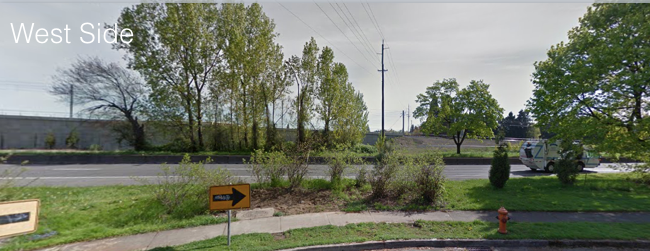
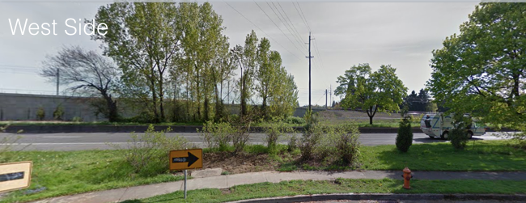

March '17
Reedway overcrossing is now priortized (project #70049) on the list of TSDC-funded projects! City Council will hear testimony for these projects on July 26th, at 2 p.m. Please email us if you'd like to attend.
March '17
Southeast Uplift and five southeast neighborhood associations recently delivered a letter to PBOT asking them to priortize this project.
Letter of Support.pdf
What is this project?
Reedway Overcrossing would be a new bike and pedestrian bridge that crosses over McLoughlin and the Brooklyn Railyard, from Reedway and 23rd to 26th and Reedway (see map to the right and street view images below). This project would fill a critical east-west connectivity gap while providing a family-friendly biking and walking route that would be much safer than existing bridges at Holgate and Bybee.
Along with Southeast Uplift, the neighborhoods of Brooklyn, Creston-Kenilworth, Eastmoreland, Reed, Sellwood-Moreland and Woodstock are all working together to request that Portland build this project. The bridge is part of the Portland Transportation System Plan (project #70049), but it currently has no design and only a rough (1-10 year) timeline.
 

Why is this bridge needed?
As the map of connectivity gaps at the left shows, Reedway Overcrossing would solve one of the worst connectivity problems in the entire city (see the map on the left), There is currently no way across the Union Pacific Railroad in the 1.1-mile stretch between Holgate and Bybee Boulevards, cutting off access to Reed College, Crystal Springs Rhododendron Garden, Oaks Bottom Wildlife Refuge, Springwater Corridor, hundreds of family wage jobs in the Brooklyn Industrial Area and thousands of homes and apartments in the Westmoreland, Brooklyn, Reed and Eastmoreland neighborhoods. This poor connectivity results in lengthy, out-of-direction travel which encourages driving instead of walking and biking. In addition, current facilities for biking and walking at the Holgate and Bybee bridges are very poor.
In addition, the neighborhoods that would be connected by this project are currently experiencing rapid and intense development. In northern Westmoreland alone, over 400 apartments are recently completed, under construction or proposed in the immediate vicinity of the overcrossing. Another 900 apartments are proposed to the south in Sellwood-Moreland and to the north in Brooklyn, while Reed and Eastmoreland neighborhoods are also experiencing significant infill development. Meanwhile, Reed College has expanded with new dorms for 125 students at the northwest corner of its campus, a quarter mile from the overcrossing site. This growth translates into increased travel demand.
How would the bridge get funded?
Construction of this bridge would be partially or fully funded using Transportation System Developement Charges. These are fees that are paid by developers when they build a new project, and they are designed to serve the area in which the project occurs.